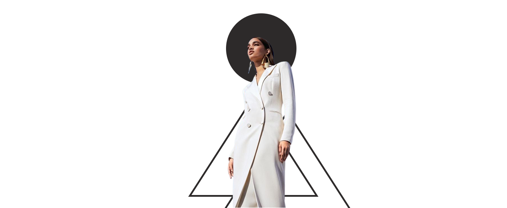

BeSustentable


MODA
SUSTENTABLE
La moda sustentable es parte de la tendencia más amplia del diseño que apunta a crear un producto elaborado considerando el impacto ambiental y social que puede tener en todo su ciclo de vida, en la que se incluye la huella de carbono que deja. De acuerdo con la publicación de mayo de 2007 de Vogue.
Click para ver mas